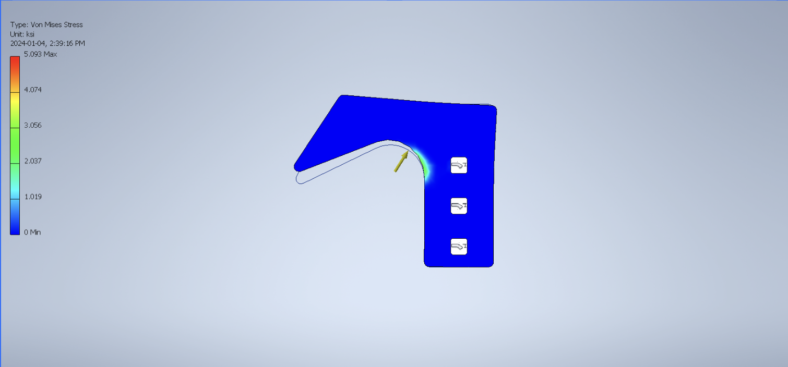
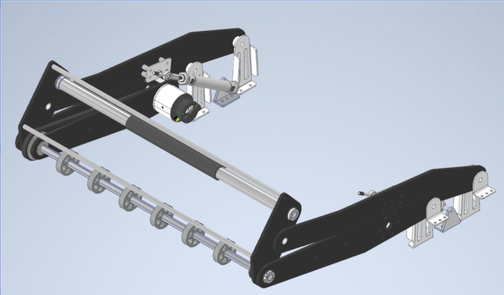

This is Dunkirk, a 3 times district event winner, multi-award winning robot which finished 4th in Ontario and qualified for world championships. My primary role on this robot was leading the design of the intake and designing the hooks which would hold the wheight of the robot as it hung from bars.
The following is the final ittiration of the intake. Alhtough it was manufactured it did not make it onto final competition robot, due to the fact that the intake team determined it would not be a massive diffrence to the performance. It is a 4 bar linkage powered by 2 pnuematic cylinders to go up and down to come in and out of the robot frame in order to keep the intake protected when its not in use. If you want to go through the drawings they are linked to this picture.

Hooks
This hook project was my intro to FEA which allows you to look at how parts will handle loads and moments. When I was given this hook it initially had a safety factor of less than 1 meaning it would have broken with the load it was going to be put under. After tweaks which I repared all the little bits of it which allowed me to reach a safety factor of 14 (it could handle 14 times its load.) I could identify these weak points due to FEA which highlighted all the areas which would have failed.

Intake Mk2
This was the final intake which was used in competition. It consited of a 4 bar linkage which would raise and lower in order to both comply with the rules and pick up balls. It used 2 horizontal rollers in order to control the game pieces. It also used pnuematics in order to raise and loweer itself.